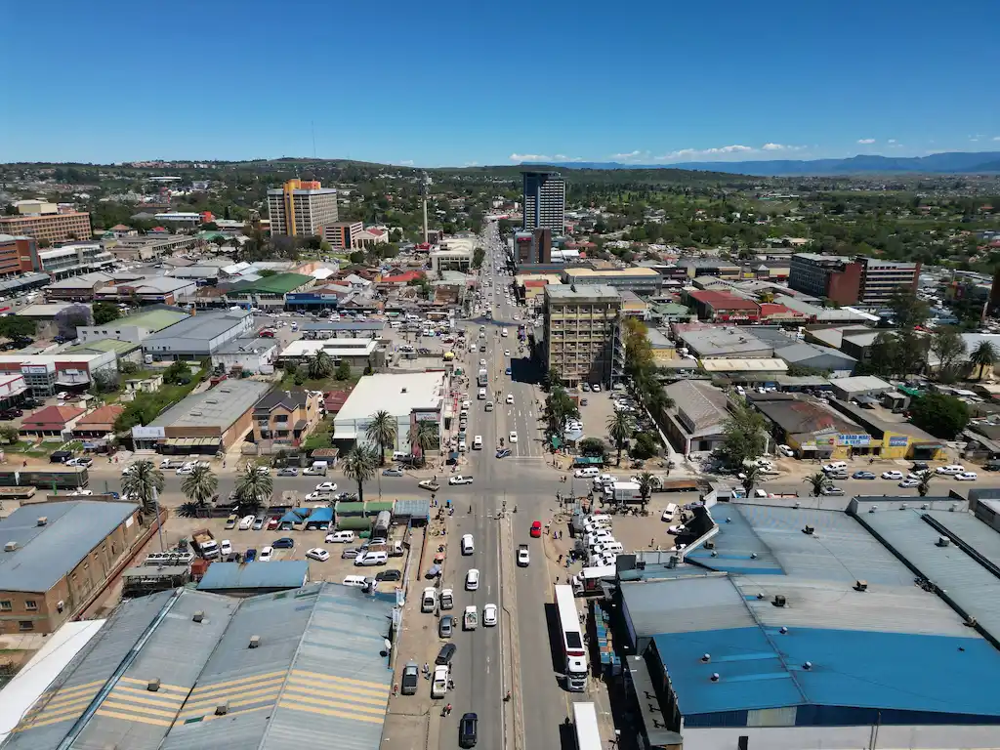

About Me
My name is Luthando Ngombane, and I was born in Mthatha, South Africa. I am currently working as a Full Stack Web Developer at 360 Administration and Systems, where I specialize in building and maintaining both front-end and back-end web applications. Alongside my professional role, I am pursuing a degree in BASc in Software Development through BYU-Idaho, balancing my studies with my career to deepen my expertise in the field. I am passionate about coding, technology, and continuously improving my skills in both legacy tools and the latest tech tools available, this allows me to be able to help maintain legacy code and be flexible enough to innovate in within the latest trends.
Mthatha, South Africa
Mthatha, located in the Eastern Cape province of South Africa, is the main town of the King Sabata Dalindyebo Municipality. It’s a vibrant place with a rich history, founded in 1883 along the banks of the Mthatha River. The town is known for its cultural significance, being home to the Nelson Mandela Museum, and its educational institutions like the Walter Sisulu University for Technology and Science. Mthatha is surrounded by natural beauty, including reserves like the Nduli Nature Reserve, just 3km south of the town.